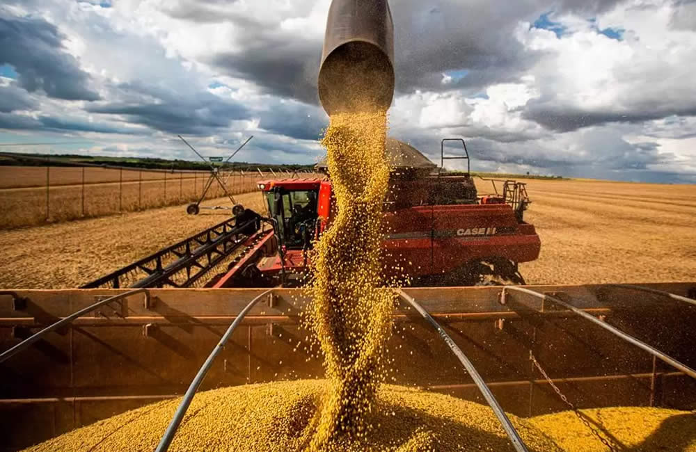

Agro Para a Cidade
O setor agropecuário desempenha um papel fundamental na sustentação e no desenvolvimento das cidades,
desempenhando diversas funções essenciais que vão além da simples produção de alimentos.
A importância do agronegócio para as áreas urbanas pode ser vista em várias dimensões
- Economia Local: O agronegócio é um dos principais motores econômicos de muitas cidades, gerando empregos diretos e indiretos não apenas na produção agrícola, mas também em atividades relacionadas, como transporte, armazenamento, logística e comércio.
Isso contribui significativamente para o crescimento econômico e para a geração de renda nas áreas urbanas.
- Abastecimento de Alimentos: As cidades dependem do campo para suprir suas necessidades alimentares.
A produção agrícola fornece uma variedade de alimentos essenciais para a dieta das populações urbanas, garantindo segurança alimentar e nutricional.
- Desenvolvimento Tecnológico: O setor agropecuário tem sido um campo fértil para o desenvolvimento e a aplicação de novas tecnologias. Desde técnicas avançadas
de cultivo até a implementação de sistemas de informação e gestão, o agronegócio impulsiona a inovação tecnológica que também beneficia outros setores urbanos.
- Preservação Ambiental: Muitas práticas agrícolas modernas são voltadas para a sustentabilidade ambiental, promovendo a conservação dos recursos naturais, como água e solo, e a preservação da biodiversidade.
Isso é crucial não apenas para o meio ambiente em si, mas também para a qualidade de vida dos habitantes urbanos, que dependem de um ambiente saudável para seu bem-estar.
- Integração e Coesão Social: O agronegócio frequentemente promove a coesão social ao integrar diferentes segmentos da população, tanto rural quanto urbana, em torno de objetivos comuns,
como o desenvolvimento econômico regional e a promoção do bem-estar social.
- Contribuição para o PIB Nacional: O setor agropecuário é um dos pilares da economia nacional em muitos países, contribuindo significativamente para o Produto Interno Bruto (PIB) e para a balança comercial.
Isso tem um impacto direto nas finanças públicas e na capacidade do governo de investir em infraestrutura e serviços essenciais para as cidades.
|

|